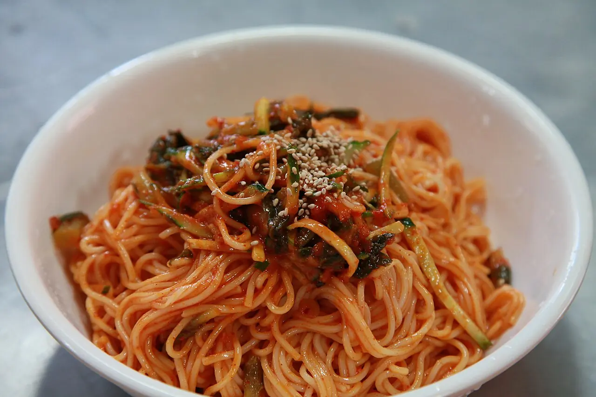

비빔국수는 양념장 맛이 전부처럼 보이지만, 실제로는 면의 상태가 맛을 더 크게 좌우합니다. 소면을 너무 오래 삶으면 양념이 묻기 전에 면이 퍼지고, 찬물 헹굼이 부족하면 전분기가 남아 양념이 텁텁하게 붙습니다. 반대로 물기를 덜 빼면 양념장이 금방 묽어져 그릇 바닥에 고입니다. 비빔국수의 핵심은 매콤달콤한 양념보다 면을 차갑고 탱탱하게 준비하는 데 있습니다.
더운 날 먹는 비빔국수는 속도가 중요합니다. 면은 삶은 뒤 바로 헹구고, 양념장은 미리 섞어 두며, 고명은 간단하게 준비해 마지막에 한 번에 버무립니다. 참기름은 처음부터 많이 넣지 않고 마지막에 향을 입히는 정도로 넣어야 양념이 미끄러지지 않습니다. 아래 분량은 2인분 기준입니다.
| 구분 | 재료 | 분량 | 준비 기준 |
|---|---|---|---|
| 주재료 | 소면 | 200g | 끓는 물에 삶고 찬물에서 전분기를 충분히 씻습니다 |
| 양념 | 고추장 | 2큰술 | 너무 되직하면 식초와 매실청으로 풉니다 |
| 양념 | 고춧가루 | 1큰술 | 색과 매운맛을 보태되 덩어리를 풀어 둡니다 |
| 산미 | 식초 | 2큰술 | 먹기 직전 맛을 보고 1작은술씩 조절합니다 |
| 단맛 | 매실청 또는 설탕 | 1큰술 | 고추장의 짠맛과 신맛을 둥글게 합니다 |
| 간 | 진간장 | 1큰술 | 양념의 바닥 간을 잡습니다 |
| 마무리 | 참기름과 깨 | 약간 | 버무린 뒤 마지막에 넣어 향을 살립니다 |
| 고명 | 오이, 삶은 달걀 | 적당량 | 오이는 얇게 썰고 달걀은 반으로 자릅니다 |
면은 익힘보다 헹굼이 맛을 좌우합니다

소면은 끓는 물에 넣으면 금방 거품이 올라옵니다. 물이 넘치려 할 때 찬물을 조금 붓고 다시 끓이는 과정을 한두 번 반복하면 속까지 고르게 익습니다. 중요한 것은 삶은 뒤입니다. 면을 체에 받치고 찬물에서 손으로 비비듯 씻어 전분기를 빼야 합니다. 물이 뿌옇게 나오지 않을 때까지 헹구면 면이 훨씬 깔끔합니다.
헹군 뒤에는 물기를 꼭 빼야 합니다. 체에 받친 채로 흔들고, 손으로 가볍게 눌러 물을 털어 냅니다. 물기가 남아 있으면 양념장이 묽어지고 면에 붙지 않습니다. 비빔국수에서 면이 싱겁게 느껴지는 가장 흔한 이유는 양념이 약해서가 아니라 면에 물이 많아서입니다.
양념장은 되직하게 시작합니다
양념장은 처음부터 묽게 만들지 않습니다. 고추장, 고춧가루, 진간장, 식초, 매실청을 섞으면 처음에는 조금 되직해야 합니다. 면에서 남은 수분과 오이의 물기가 들어가면 자연스럽게 풀립니다. 처음부터 물이나 육수를 넣으면 먹는 동안 양념이 바닥으로 흘러내립니다.
신맛과 단맛은 취향을 타므로 한 번에 많이 넣지 않는 편이 좋습니다. 식초는 먹기 직전에도 조절할 수 있지만, 설탕은 완전히 녹는 시간이 필요합니다. 매실청을 쓰면 단맛과 산미가 함께 들어가 부드럽고, 설탕을 쓰면 더 깔끔합니다. 참기름은 양념장에 많이 섞기보다 버무린 뒤 마지막에 넣어야 고소한 향이 살아납니다.
버무릴 때는 손보다 젓가락이 편합니다
큰 볼에 물기를 뺀 면을 넣고 양념장을 절반만 먼저 넣습니다. 젓가락으로 들어 올리듯 섞으면 면이 끊어지지 않습니다. 색이 고르게 돌면 남은 양념을 조금씩 더합니다. 양념을 한 번에 다 넣으면 짜거나 맵게 맞춰졌을 때 되돌리기 어렵습니다. 마지막에 오이와 깨, 참기름을 넣고 짧게 섞습니다.
손으로 세게 주무르면 면이 뭉개지고 금방 풀어집니다. 특히 삶은 지 오래된 면은 약하므로 더 조심해야 합니다. 비빔국수는 무치는 힘보다 섞는 순서가 중요합니다. 면에 양념이 얇게 코팅되고, 그릇 바닥에 물이 고이지 않으면 잘 버무린 상태입니다.
고명은 식감만 보태도 충분합니다
비빔국수 고명은 많을 필요가 없습니다. 오이는 아삭함을 주고, 삶은 달걀은 매운맛을 눌러 줍니다. 김가루를 넣으면 맛은 좋아지지만 수분을 만나 금방 눅눅해질 수 있으니 먹기 직전에 올립니다. 상추나 깻잎을 넣을 때는 물기를 잘 털어야 합니다. 채소가 젖어 있으면 양념의 농도가 바로 흐려집니다.
남은 비빔국수는 오래 보관하기 어렵습니다. 면이 양념을 빨아들이고 채소에서 물이 나오기 때문입니다. 남길 것 같다면 면과 양념장을 따로 보관하고, 먹기 직전에 버무립니다. 삶은 면은 냉장고에서 굳을 수 있으므로 되도록 바로 먹는 편이 가장 좋습니다. 비빔국수는 미리 만들어 두는 음식보다 빠르게 준비해 바로 먹는 음식입니다.
비빔국수는 양념장 맛이 강해서 면 상태를 가리기 쉽지만, 실제로는 면의 온도와 물기가 맛을 결정합니다. 삶은 뒤 찬물에 충분히 헹궈 전분기를 빼야 양념이 텁텁해지지 않습니다. 손으로 비볐을 때 면이 미끈거리기보다 매끈하게 풀리고, 체에 올렸을 때 물방울이 뚝뚝 떨어지지 않을 정도가 좋습니다. 물기가 많으면 고추장과 식초가 묽어지고, 물기가 너무 없으면 면이 뻣뻣해져 양념이 고르게 돌지 않습니다.
양념장은 한 번에 모두 넣기보다 80% 정도만 먼저 넣고 비빈 뒤 간을 맞추는 편이 안전합니다. 김치나 오이를 곁들이면 수분과 짠맛이 추가되기 때문입니다. 참기름은 많이 넣으면 향은 좋아도 매운맛과 산미가 둔해질 수 있어 마지막에 소량만 두르는 것이 좋습니다. 남은 국수는 시간이 지나면 면이 양념을 빨아들여 질감이 무거워집니다. 가능하면 먹기 직전에 비비고, 남았다면 오이채나 얼음을 넣기보다 새 양념을 조금 더해 풀어 주는 편이 낫습니다.
매운맛을 조절할 때는 고추장을 줄이는 것보다 산미와 단맛의 균형을 먼저 맞추는 편이 좋습니다. 고추장을 확 줄이면 양념의 농도가 약해져 면에 붙는 힘이 떨어질 수 있습니다. 어린이나 매운맛에 약한 사람이 먹는다면 고추장 일부를 간장과 매실청으로 바꾸고, 식초는 마지막에 조금씩 더해 산뜻함을 맞추면 됩니다. 삶은 달걀이나 오이채를 곁들이면 매운맛이 부드러워지고, 참깨를 바로 빻아 넣으면 고소한 향이 더 선명해집니다.
고명은 많이 올리는 것보다 온도와 식감의 대비를 살리는 쪽이 좋습니다. 오이는 가늘게 썰어 소금을 아주 약하게 뿌린 뒤 물기를 살짝 빼면 양념을 흐리게 만들지 않습니다. 삶은 달걀은 완숙으로 준비하면 매운 양념을 눌러 주고, 김가루는 먹기 직전에 올려야 눅눅해지지 않습니다. 접시는 미리 차갑게 두면 면의 탄력이 더 오래 갑니다. 작은 준비가 비빔국수의 마지막 한 젓가락을 가볍게 만듭니다.
좋은 비빔국수는 양념장이 강한 음식이 아니라 면과 양념이 따로 놀지 않는 음식입니다. 소면을 제대로 헹구고 물기를 빼면 같은 양념장도 훨씬 선명하게 느껴집니다. 매운맛을 더하기 전에 먼저 면의 상태를 확인하면 여름 한 그릇의 완성도가 크게 달라집니다.